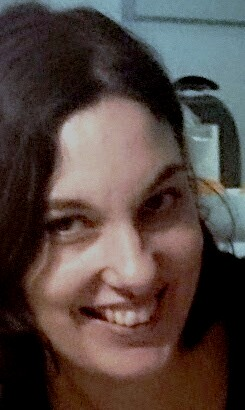

|  |
Barbara BuschAdvocacy Advisor International Cooperation at Austrian Red Cross Focal Point Environmental Sustainability With almost 20 years of professional experience within the Red Cross and its international work I have strong skills in leading teams, representation as well as managing relationships and projects - that I have been able to expand in subsequent positions of greater responsibility and authority. My expertise is both academic, with a Master degree in development management, and gained from practical experience in the development and humanitarian sector, including the fields of water/sanitation, food security, disaster risk reduction and advocacy. Within my team and across cultures I have always promoted mutual respect, enthusiasm for our work and a spirit of co-operation. |
| Dates | Function |
|---|---|
| Sep 16 - to date | Advocacy Advisor International Co-operation / Focal Point Environmental Sustainability for Austrian Red Cross |
| Jun 15 – Sep 16 | Maternity leave |
| Oct 09 – Jun 15 | Team leader Africa/Deputy Head of Programmes for AutRC |
| html | ⭐⭐ | css | ⭐⭐ |
| javascript | ⭐⭐ | bootstrap | ⭐⭐ |